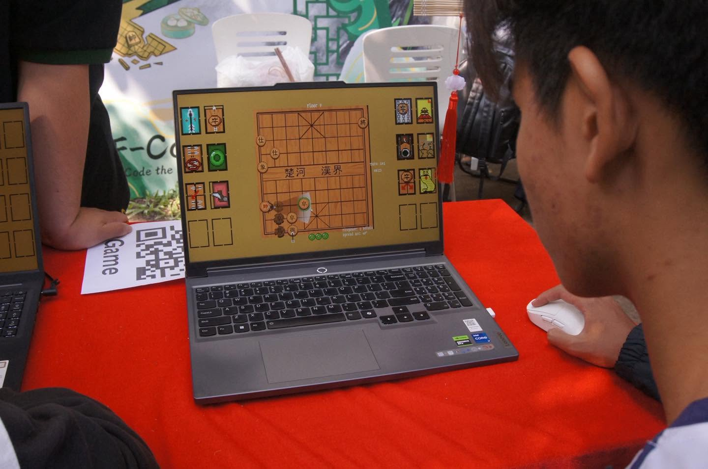
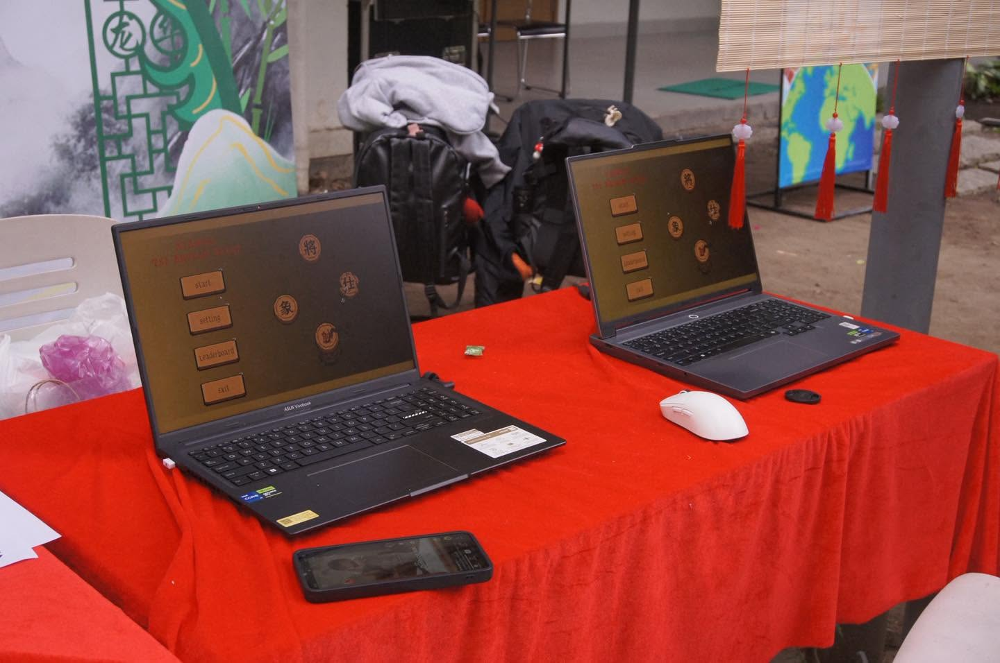

I. Introduction & Showcase
Xiangqi: The Broken Board is a tactical rogue-like twist on traditional Chinese Chess (Xiangqi). The core gameplay revolves around a tactical paradox: Move to Reload vs. Shoot to Kill. Every step reloads your ammunition, while firing your weapon clears the board of enemy pieces governed by authentic Xiangqi movement rules.
Community Showcase Event
This project was proudly showcased at the FPT Open Day 2026 at the F-Code booth. You can check out the event highlight and community feedback on this Facebook Showcase Post.


Gameplay Videos
1. Core Gameplay Without Roguelike (Pure Xiangqi)
2. Finished Product Gameplay (Roguelike Demo)
3. First Implement Card System
II. Technical & Code Structure
Developed in Unity with a modular, grid-based architecture handling turn management, pathfinding, and card drafting.
Code Architecture
- Turn & Grid Managers:
TurnManager.cshandles player/enemy turn cycles.GridManager.cs,BoardNode.cs, andBoardState.csmanage the 9x10 grid layout, orthogonal/diagonal node traversal, and river/palace boundaries. - Player Controller:
PlayerActionController.csandPlayerGeneral.csprocess 8-directional input, ammo economy (movement reloads), cone/ranged shooting, and corpse interaction. - Enemy AI Roster: Specialized modular scripts for each piece type:
EnemyPawn.cs,EnemyHorse.cs(with hobbling rules),EnemyElephant.cs,EnemyCannon.cs(screen logic),EnemyChariot.cs,EnemyAdvisor.cs, andEnemyGeneral.cs(Boss). - Roguelike Card System:
DraftManager.csandCardSO.cshandle floor progression and drafting between Yin and Yang card modifiers. - Systems & Persistence:
DataPersistenceManager.cs,LevelManager.cs,RunManager.cs, andScreenShakeManager.cs.
Tech Stack
| Category | Technology |
|---|---|
| Engine | Unity (C#) |
| Tweening & UI | DOTween, TextMeshPro |
| Architecture | Grid-based Turn System, ScriptableObject Cards |
III. Yin & Yang Card System
Between floors, players draft cards that alter the rules of engagement. Yang Cards empower the player, while Yin Cards buff the enemy forces.
Yang Cards (Player Buffs & Rule Breakers)
| Card Name | Vietnamese | Description |
|---|---|---|
| Gunpowder Gourd | Bầu Đạn Thuốc Súng | +1 Max Ammo. You start each floor fully loaded. |
| The Red Hare | Ngựa Xích Thố | Moving diagonally now reloads 2 Ammo instead of 1. |
| Jade Talisman | Ngọc Bội | Gain 1 Armor at start of floor (absorbs 1 lethal hit). |
| Cloud Step | Khinh Công | Your movement ignores Corpses (can step through them). |
| Piercing Dragon | Xuyên Tâm Thương | Point-blank shots pierce the first target and damage the enemy behind. |
| The Crouching Tiger | Ngọa Hổ Tàng Long | Firing through an adjacent piece acts like a Cannon (infinite range, 3 damage). |
| Mandate of Heaven | Thiên Mệnh | "Flying General" Ultimate triggers with 1 blocker instead of an empty file. |
| Art of War | Tôn Tử Binh Pháp | Once per floor, if Ammo is 0, your next shot costs 0 Ammo. |
Yin Cards (Enemy Buffs & Board Modifiers)
| Card Name | Vietnamese | Description |
|---|---|---|
| Conscription | Lệnh Bắt Lính | +2 Pawns spawn at the start of every floor. |
| Desperation | Phá Cung | Enemy Boss and Advisors can leave the 3x3 Palace. |
| The Vanguard | Tiên Phong | +1 Chariot (Xe) spawns at the start of every floor. |
| Artillery Backup | Pháo Viện | +1 Cannon (Pháo) spawns at the start of every floor. |
| Imperial Mandate | Sắc Lệnh | Advisors grant the General -1 damage intake while alive. |
| Drought | Hạn Hán | The Chu-Han River dries up; enemy Elephants can cross. |
| Bloodthirsty Pawns | Binh Cuồng | Pawns can move 1 step diagonally forward to capture. |
| Heavy Armor | Giáp Trụ | All Elephants gain +2 Max HP. |
IV. Collaboration & Credits
Created through a collaborative development effort:
- Nguyen Duc Nhat Khang — Main Artist & Visual Design (Facebook Profile)
- Nguyen Tung An — Game Design & Systems (Facebook Profile)